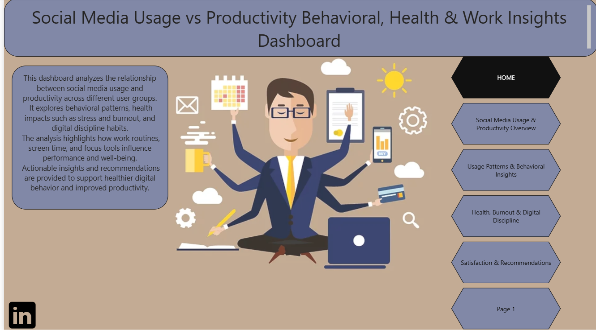
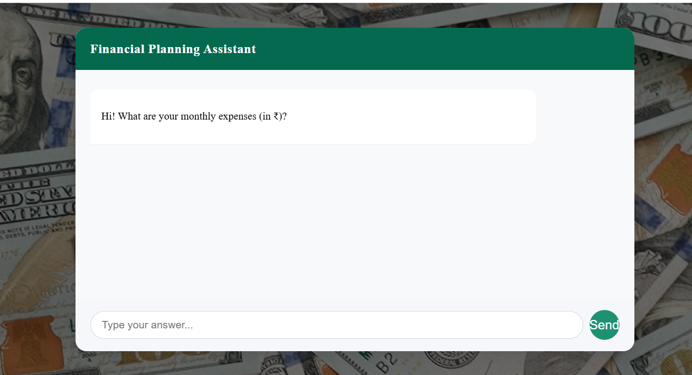
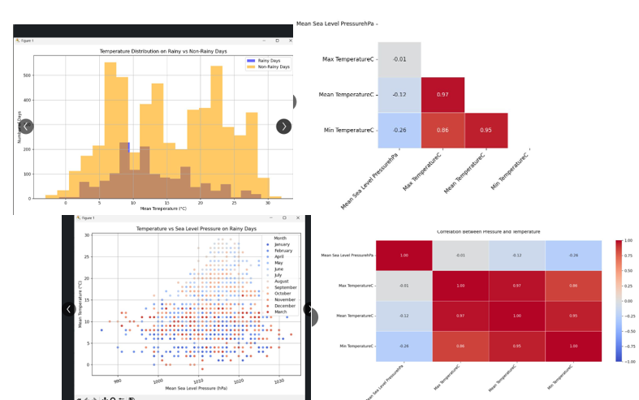

Developed an interactive Power BI dashboard to analyze social media usage impact on productivity, stress, burnout, and health indicators. Generated actionable insights to improve productivity.

Built an AI chatbot to guide users in financial planning using Python and Gemini API. Provided personalized recommendations with high accuracy.

Analyzed climate patterns using Python and ML techniques to study trends and forecast future weather conditions with high accuracy.